1. はじめに
このアプリでは、XY座標と緯度経度の相互変換、複数地点の地図表示、円の作成、地点間の距離計測ができます。
- 左上の ≡ からメニューを開きます。
- 座標の種類、測地系、系番号を選び、表に値を入力します。
- 「地図加工」または「データ変換」から目的の操作を実行します。
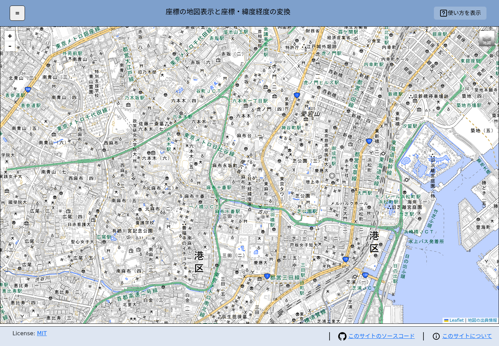
最初に確認すること
XY座標を使う場合は、座標に対応する測地系と1～19系の系番号を確認してください。誤った組み合わせを選ぶと、違う場所に表示・変換されます。
2. 画面の見方
| 場所 | できること |
|---|---|
| 左上の「≡」 | 座標条件、データテーブル、地図加工、データ変換を表示します。 |
| 中央の地図 | 移動、拡大・縮小、右クリック操作、写真のドロップを行います。 |
| 地図右上のレイヤーボタン | 標準地図、淡色地図、航空写真などを切り替えます。 |
| 右上の「使い方を表示」 | 目的別の簡易操作ガイドを表示します。 |
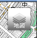
地図右上にある、四角形が重なった絵柄のボタンです。ポインターを合わせると、背景地図の選択肢が開きます。
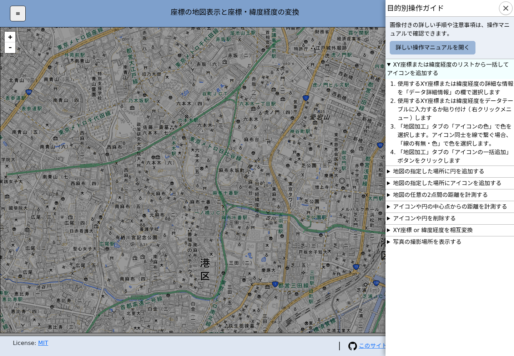
3. 座標を入力する
- 左上の「≡」を押してメニューを開きます。
- 「データの種類」で「XY座標」または「緯度経度」を選びます。
- 座標に対応する測地系を選びます。
- XY座標の場合は「XY座標の系番号」を選びます。緯度経度の場合、系番号は選択不要です。
- データテーブルの左列にXまたは緯度、右列にYまたは経度を入力します。
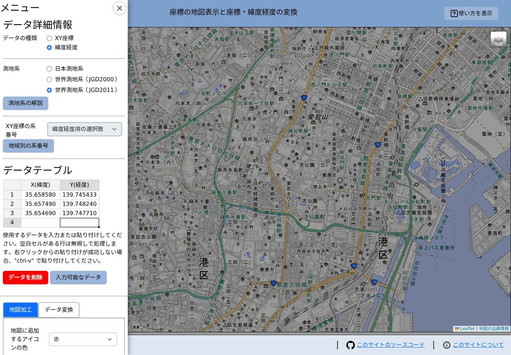
入力できる形式
- XY座標
- 十進数形式の緯度経度（例:
35.658099） - 度分秒形式の緯度経度（例:
35度39分29.1572秒） - Excelのセル、またはタブ区切りテキストからの貼り付け
度分秒形式は、貼り付け時に十進数形式へ自動変換されます。右クリックの「貼り付け」が利用できない場合は、セルを選択して Ctrl + V を押してください。
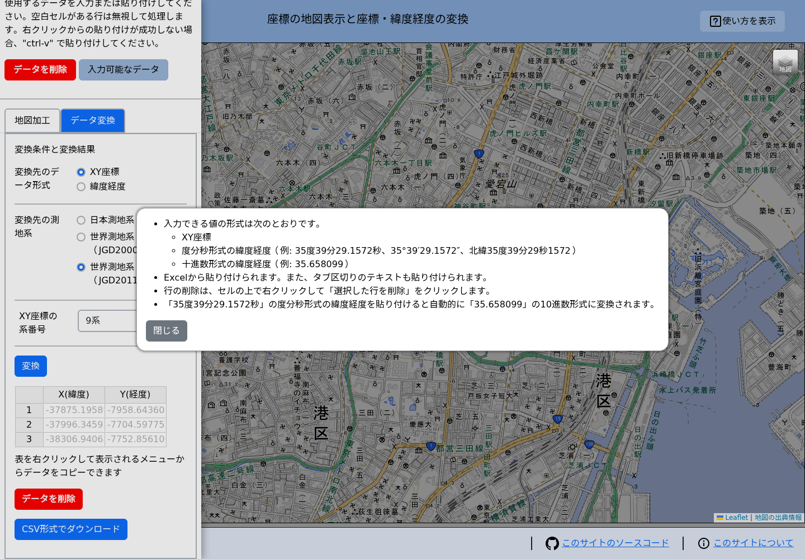
空白行の扱い
片方でもセルが空の行は処理対象外です。アイコンを線で結ぶ場合は、空白行を区切りとして別々の線になります。
4. アイコンを一括追加する
- データテーブルに座標を入力します。
- 「地図加工」タブを開きます。
- 「地図に追加するアイコンの色」を選びます。アイコンが不要なら「なし」を選びます。
- 地点を順番に結ぶ場合は「地図に追加する線の有無と色」で色を選びます。線が不要なら「線無し」を選びます。
- 「アイコンの一括追加」を押します。
追加したすべての地点が収まるように、地図の表示範囲が自動調整されます。
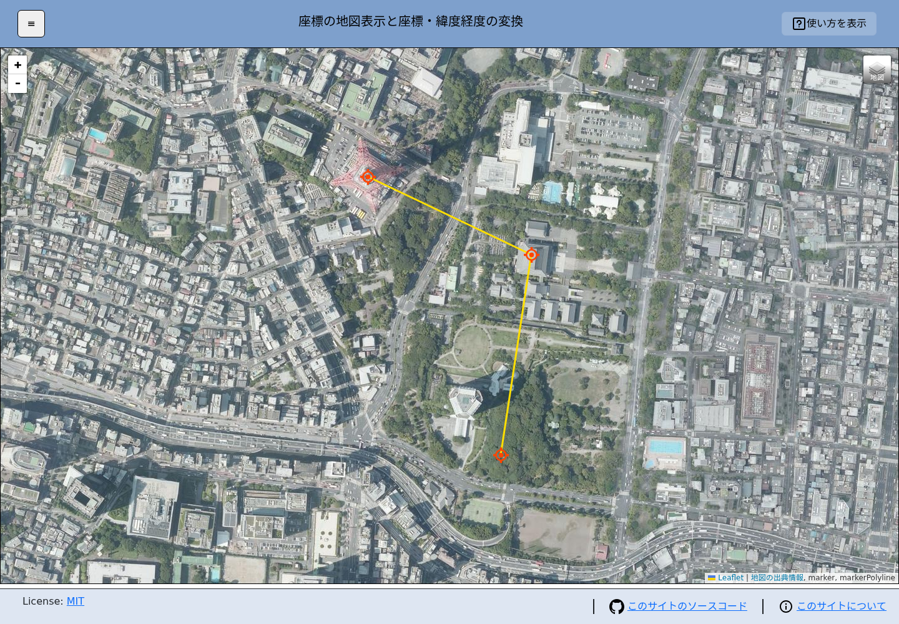
線を使わずアイコンだけ追加する
- 「地図に追加するアイコンの色」で使用する色を選びます。
- 「地図に追加する線の有無と色」で「線無し」を選びます。
- 「アイコンの一括追加」を押します。
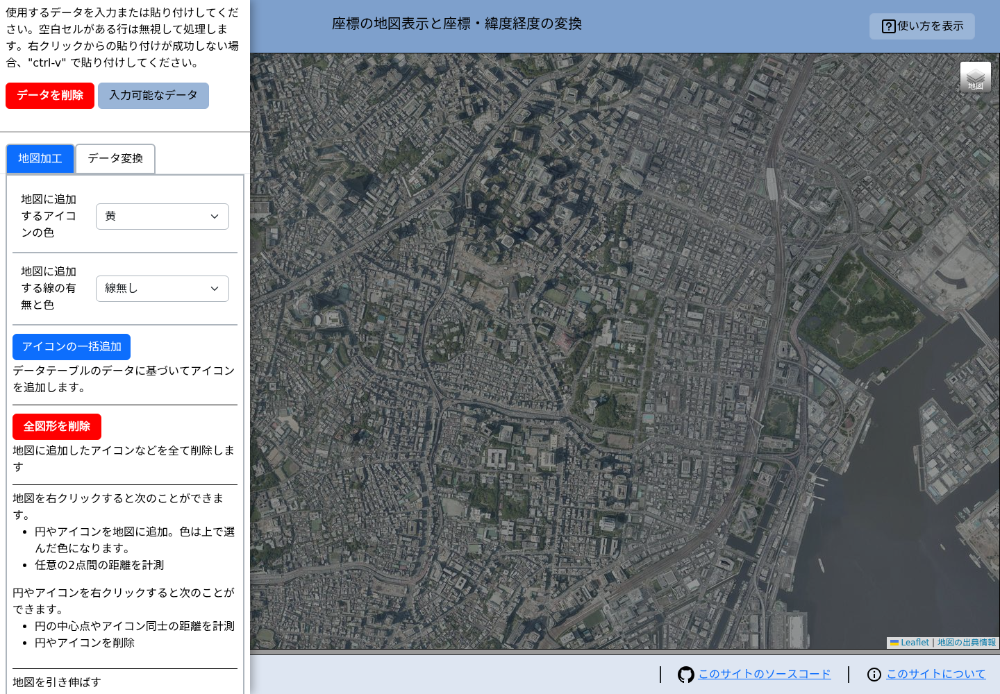
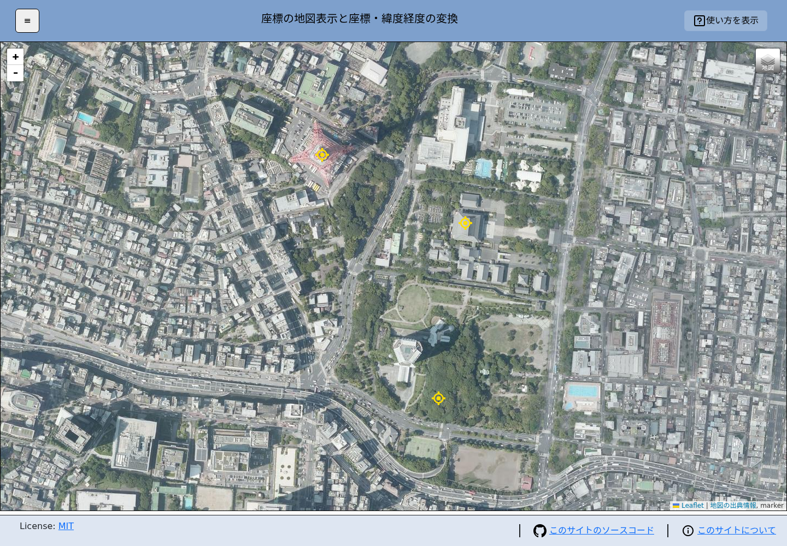
5. 地図を右クリックして加工する
地図上の任意の場所を右クリックすると、次のメニューが開きます。
- 円を追加
- アイコンを追加
- この地点からの距離を計測
- この地点までの距離を計測
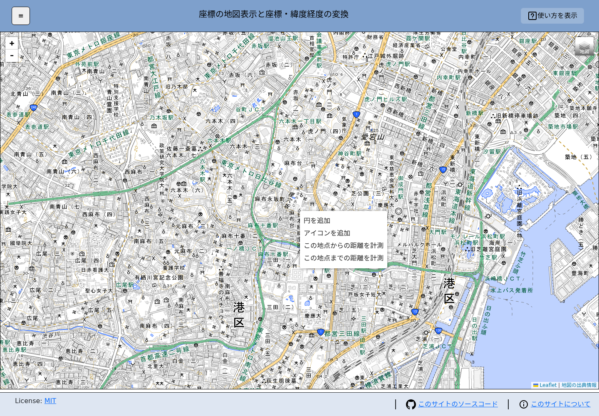
円を追加する
- 「地図加工」で線の色を選びます。
- 円の中心にしたい地点を右クリックし、「円を追加」を選びます。
- 半径をメートル単位で入力し、「追加」を押します。
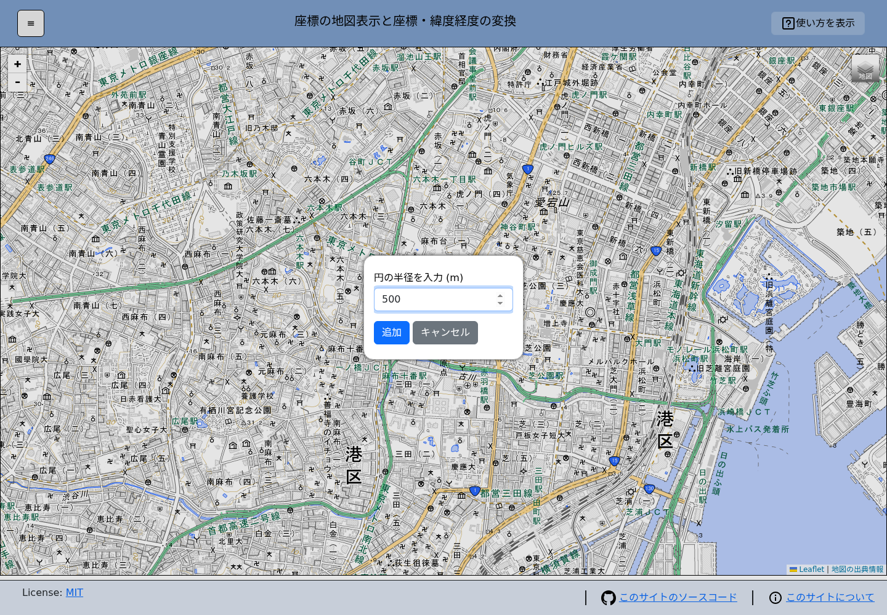
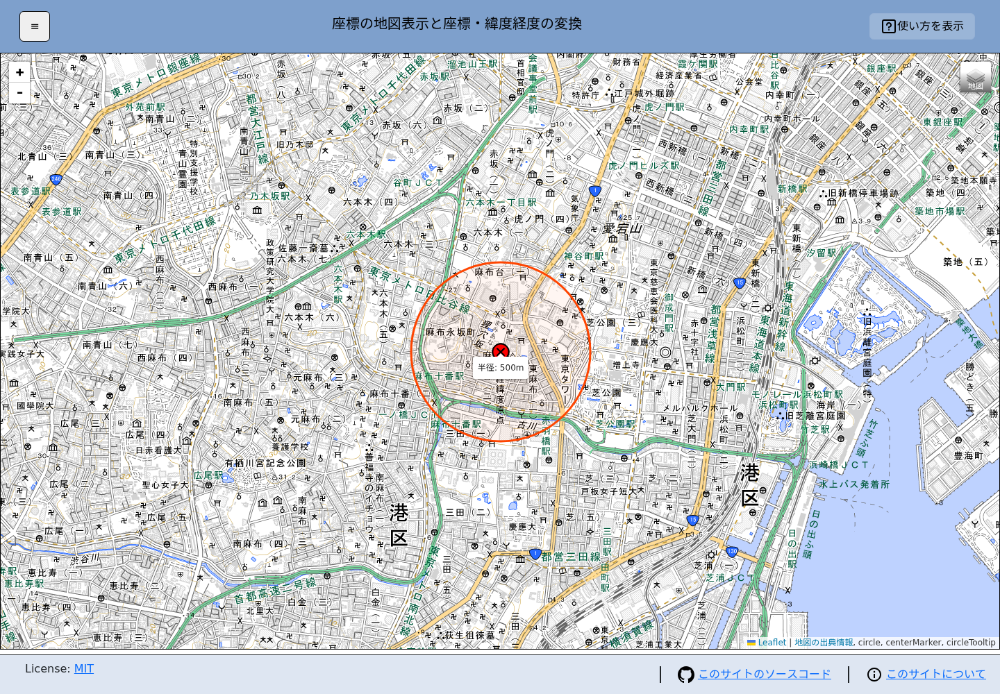
任意の場所にアイコンを追加する
- 「地図加工」でアイコンの色を選びます。
- 追加地点を右クリックし、「アイコンを追加」を選びます。
6. 距離を計測する
地図上の任意の2点を計測する
- 始点を右クリックし、「この地点からの距離を計測」を選びます。
- 終点を右クリックし、「この地点までの距離を計測」を選びます。
- 2点が線で結ばれ、距離がメートル単位で表示されます。
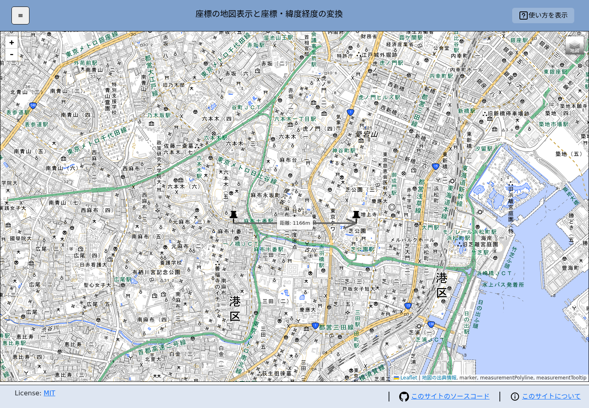
アイコンや円の中心から計測する
アイコンまたは円を右クリックし、「～からの距離を計測」を始点で、「～までの距離を計測」を終点で選びます。アイコン同士、円同士、アイコンと円の組み合わせで計測できます。
7. 座標を変換・出力する
- 変換元の種類、測地系、系番号を選び、データテーブルに値を入力します。
- 「データ変換」タブを開きます。
- 変換先のデータ形式、測地系、系番号を選びます。
- 「変換」を押します。
- 結果をコピーする場合は結果表を右クリックし、「データを全てコピー」を選びます。
- 変換元と変換後をファイルに保存する場合は、「CSV形式でダウンロード」を押します。
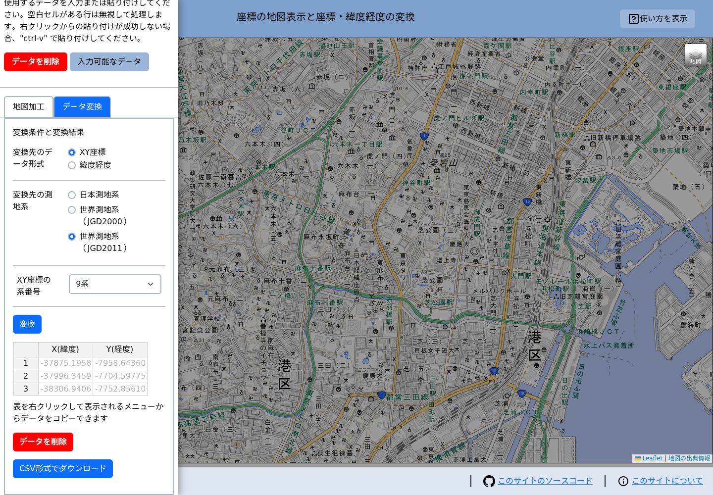
CSVの内容
CSVには変換元と変換後の値に加え、軸名、測地系、系番号の見出しが出力されます。
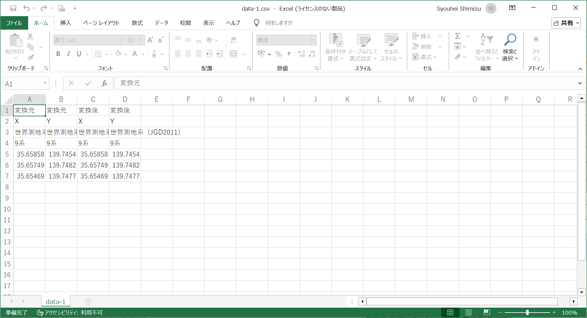
8. 写真の撮影場所を表示する
- GPS位置情報が記録された画像ファイルを用意します。
- 画像ファイルを地図上へドラッグ＆ドロップします。複数ファイルもまとめて指定できます。
- GPS位置情報を読み取れた写真は、撮影地点にカメラアイコンで表示されます。
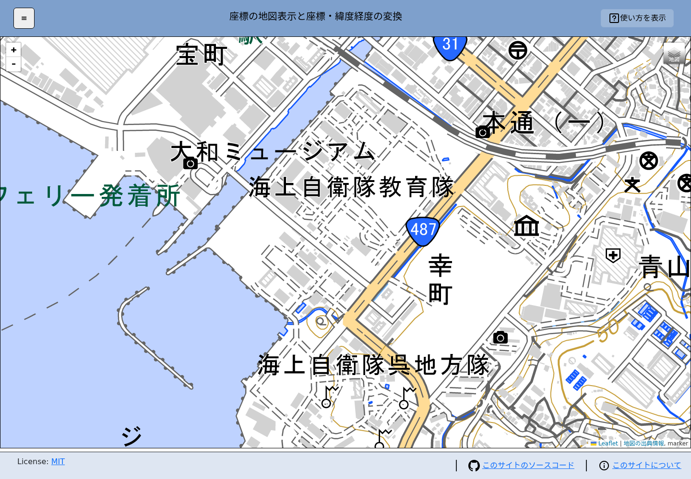
写真が表示されない場合
写真にGPS位置情報が含まれているか確認してください。画像以外のファイルは読み込まれません。
9. 地図表示・削除・印刷
地図の種類を変える
地図右上のレイヤーボタンにポインターを合わせ、標準地図、淡色地図、航空写真などから選択します。
追加した図形を削除する
- 個別に削除する: 対象のアイコンまたは円を右クリックし、削除メニューを選びます。
- まとめて削除する: 「地図加工」の「全図形を削除」を押します。
地図を印刷する
- 印刷したい範囲が画面に収まるよう、地図を移動・拡大縮小します。
- 必要に応じて「地図加工」の「地図を引き伸ばす」を調整します。
- ブラウザの印刷機能を開きます。Windows/Linuxは Ctrl + P、macOSは ⌘ + P です。
- プレビューで範囲と地図の出典表示を確認して印刷します。
10. 困ったときは
| 症状 | 確認すること |
|---|---|
| 意図しない場所に表示される | XY座標／緯度経度、測地系、XY座標の系番号が元データと一致しているか確認します。 |
| 入力行が処理されない | 同じ行の2セルが両方入力されているか、数値として認識できる形式か確認します。 |
| 表へ貼り付けられない | 対象セルを選択し、Ctrl + V を使用します。 |
| 地図が表示されない | ネットワーク接続を確認します。地図タイルは外部サービスから読み込まれます。 |
| 写真の位置が表示されない | 画像にGPS位置情報が記録されているか確認します。 |
| 画面上の図形を消したい | 「地図加工」の「全図形を削除」を使用します。 |
- 右上の「使い方を表示」から、目的別の短い手順をいつでも確認できます。
- 入力条件の「測地系の解説」「地域別の系番号」も参照してください。